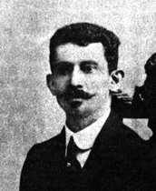

Sua trajetória é marcada por forte vínculo com a terra natal, onde exerceu a medicina com dedicação e compromisso social. Registrou em anotações suas experiências e desafios, como a viagem pelo rio Tocantins rumo a Belém, em 1920, e a difícil empreitada de trazer para Porto Nacional, em 1928, um automóvel e um caminhão do Rio de Janeiro pela Bahia, numa época sem estradas ou pontes. Essas experiências deram origem à sua obra póstuma Caminhos de Outrora. Como reconhecimento, seu nome batiza dois hospital geral de Palmas.
